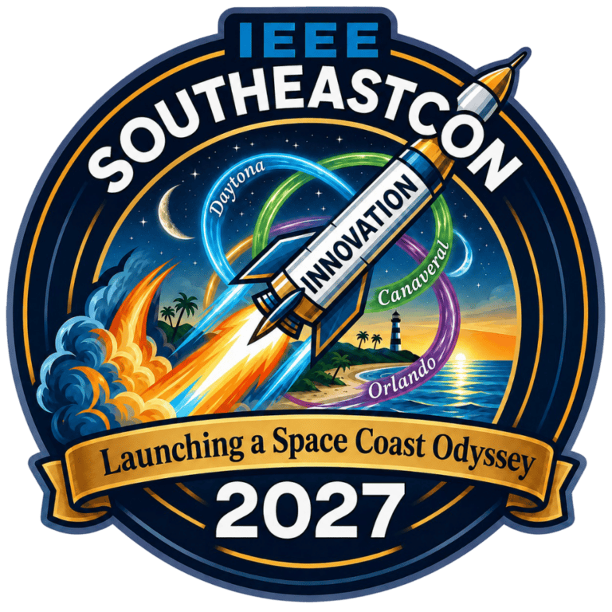

04 / IEEE USF / COMPETITION ROBOTICS
Planning a competition robot.
Working in a team of five, I helped develop a bill of materials, compare batteries, and calculate speed from our chosen motor. We presented our plan, secured $500 in funding, and are waiting for parts to begin building.
- MY ROLE
- Team member · bill of materials, battery research & motor calculations
- WHEN
- 2026 to Present
- STATUS
- Funding secured · awaiting parts

The competition
Our team is preparing a small robot for the SoutheastCon 2027 robotics competition. The challenge involves completing laps, avoiding obstacles, and picking up a wheel.
My contribution
I worked with our five person team on the bill of materials and component research. That included comparing battery options and calculating how fast the robot would travel with our selected motor.
Choosing components
Putting together the bill of materials was harder than simply listing parts. We had to compare batteries against the needs of the robot and work through motor and speed calculations so our component choices made sense together.
Team funding
We presented our plan and received $500 in team funding. The project is currently in the planning and procurement stage, with parts still on the way.
Next step
Once the parts arrive, we will begin assembling the robot and testing how the component choices and calculations translate into its actual movement.
Keep exploring my work.
Explore all projects